Chapter 4 Visualization

In this section, we’ll explore visualization methods in R. Visualization has been a key element of R since its inception, since visualization is central to the exploratory philosophy of the language.
4.1 plot in base R
In this chapter, we’ll spend a lot more time looking at ggplot2 due to its clear syntax using the grammar of graphics. However, the base R plot system generally does a good job of coming up with the most likely graphical output based on the data you provide, so we’ll use it from time to time. Through the book you’ll see various references to its use, including setting graphical parameters with par, such as the cex for defining the relative size of text characters and point symbols, lty and lwd for line type and width, and many others. Users are encouraged to explore these with ?par to learn about parameters (even things like creating multiple plots using mfrow as you can see in Figure 4.1), and ?plot to learn more overall about the generic X-Y plotting system.
par(mfrow=c(1,2))
plot(penguins$body_mass_g, penguins$flipper_length_mm,
cex=0.5) # half-size point symbol
plot(penguins$species, penguins$flipper_length_mm,
ylab="flipper length (mm)",
xlab="species")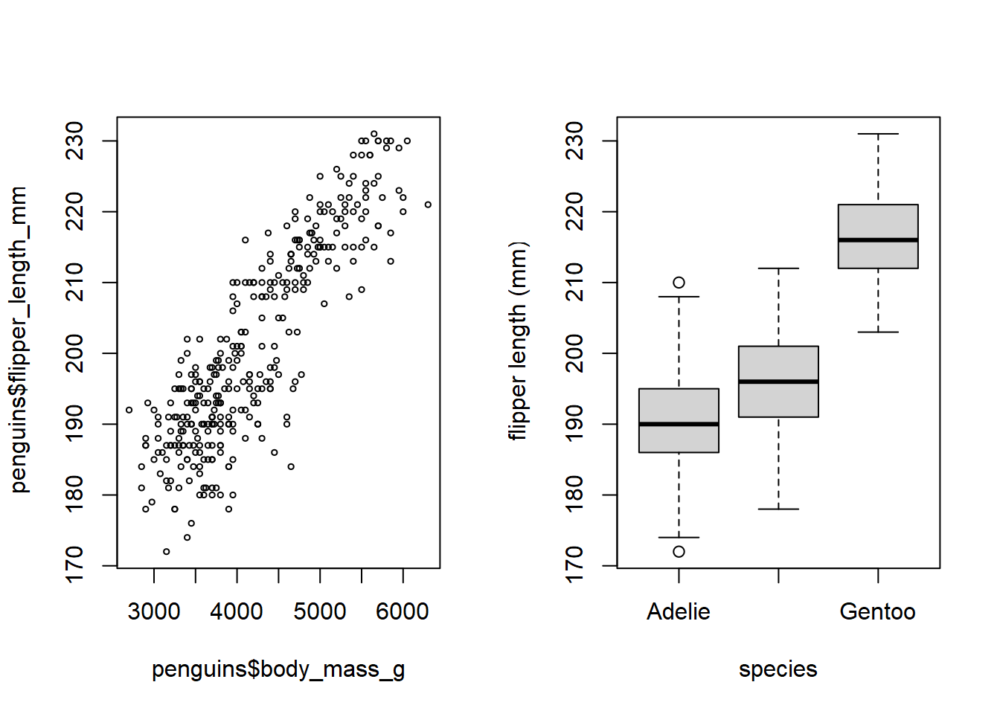
FIGURE 4.1: Flipper length by mass and by species, base plot system. The Antarctic peninsula penguin data set is from Horst et al. (2020).
4.2 ggplot2
We’ll mostly focus however on gpplot2, based on the Grammar of Graphics because it provides considerable control over your graphics while remaining fairly easily readable, as long as you buy into its grammar.
The ggplot2 app (and its primary function ggplot) looks at three aspects of a graph:
- data : where are the data coming from?
- geometry : what type of graph are we creating?
- aesthetics : what choices can we make about symbology and how do we connect symbology to data?
As with other tidyverse and RStudio packages, find the ggplot2 cheat sheet at https://www.rstudio.com/resources/cheatsheets/
4.3 Plotting one variable
The ggplot function provides plots of single and multiple variables, using various coordinate systems (including geographic). We’ll start with just plotting one variable, which might be continuous – where we might want to see a histogram, density plot, or dot plot – or discrete – where we might want to see something like a a bar graph, like the first example below (Figure 4.2).
We’ll look at a study of Normalized Difference Vegetation Index from a transect across a montane meadow in the northern Sierra Nevada, derived from multispectral drone imagery (Davis et al. 2020).
## DistNtoS elevation vegetation geometry NDVIgrowing
## Min. : 0.0 Min. :1510 Length :29 Length :29 Min. :0.3255
## 1st Qu.: 37.0 1st Qu.:1510 N.unique : 4 N.unique :29 1st Qu.:0.5052
## Median :175.0 Median :1511 N.blank : 0 N.blank : 0 Median :0.6169
## Mean :164.7 Mean :1511 Min.nchar: 4 Min.nchar:25 Mean :0.5901
## 3rd Qu.:275.5 3rd Qu.:1511 Max.nchar:15 Max.nchar:27 3rd Qu.:0.6768
## Max. :298.8 Max. :1511 Max. :0.7683
## NDVIsenescent
## Min. :0.1402
## 1st Qu.:0.2418
## Median :0.2817
## Mean :0.3662
## 3rd Qu.:0.5407
## Max. :0.7578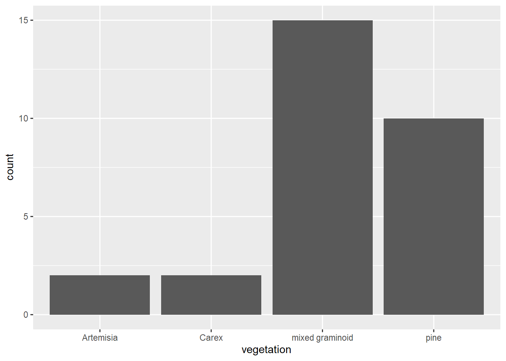
FIGURE 4.2: Simple bar graph of meadow vegetation samples
4.3.1 Histogram
Histograms are very useful for looking at the distribution of continuous variables (Figure 4.3). We’ll start by using a pivot table (these will be discussed in the next chapter, on data transformation.)
XSptsPheno <- XSptsNDVI %>%
filter(vegetation != "pine") %>%
pivot_longer(cols = starts_with("NDVI"),
names_to = "phenology",
values_to = "NDVI") %>%
mutate(phenology = str_sub(phenology, 5, str_length(phenology)))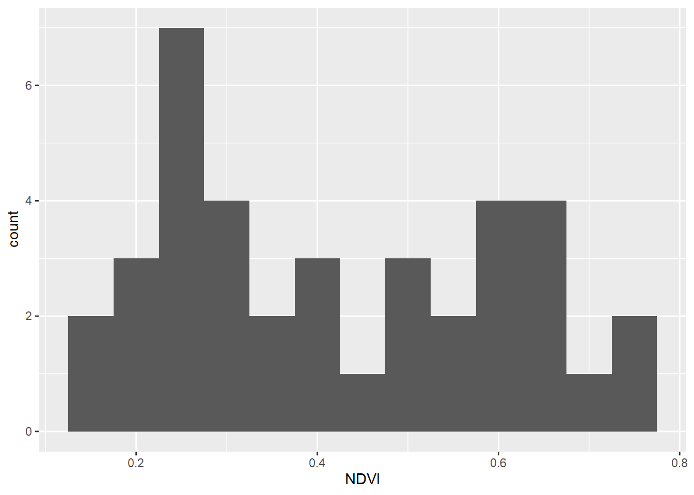
FIGURE 4.3: Distribution of NDVI, Knuthson Meadow
Histograms can be created in a couple of ways, one the conventional histogram that provides the most familiar view, for instance of the “bell curve” of a normal distribution (Figure 4.4).
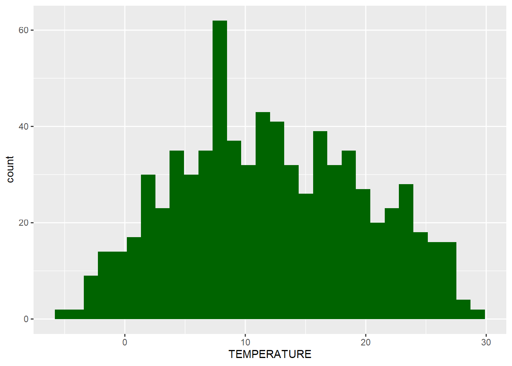
FIGURE 4.4: Distribution of Average Monthly Temperatures, Sierra Nevada
Alternatively, we can look at a cumulative histogram, which makes it easier to see percentiles and the median (50th percentile), by using the cumsum() function (Figure 4.5).
n <- length(sierraData$TEMPERATURE)
sierraData %>%
ggplot(aes(TEMPERATURE)) +
geom_histogram(aes(y=cumsum(..count..)/n), fill="dark goldenrod")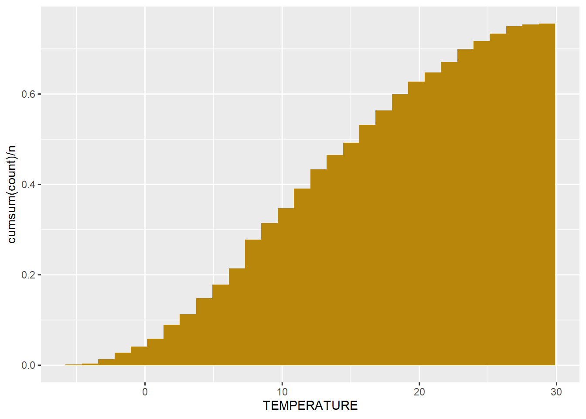
FIGURE 4.5: Cumulative Distribution of Average Monthly Temperatures, Sierra Nevada
4.3.1.1 Building a histogram from a time series
If we want to work with a time series, we can start by converting it to a tibble, and meanwhile providing a more explanatory variable name.
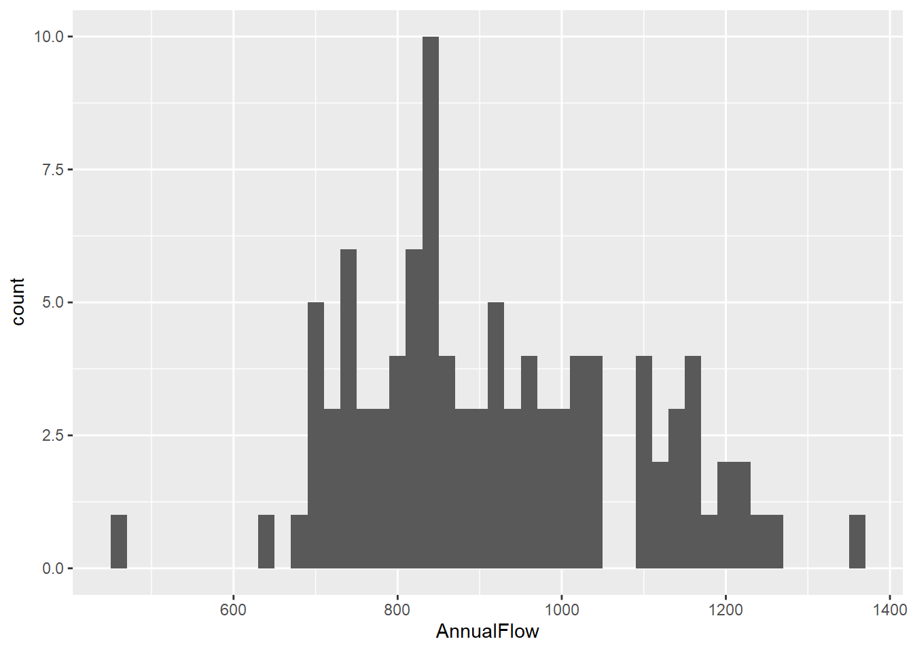
To learn more about built-in data like time series, you can simply use the console help method like you would learn about a function. So try entering
?Nile.
4.3.2 Density plot
Density represents how much of the distribution we have out of the total. The total area (sum of widths of bins times densities of that bin) adds up to 1. We’ll use a density plot to looking at our NDVI data again (Figure 4.6).
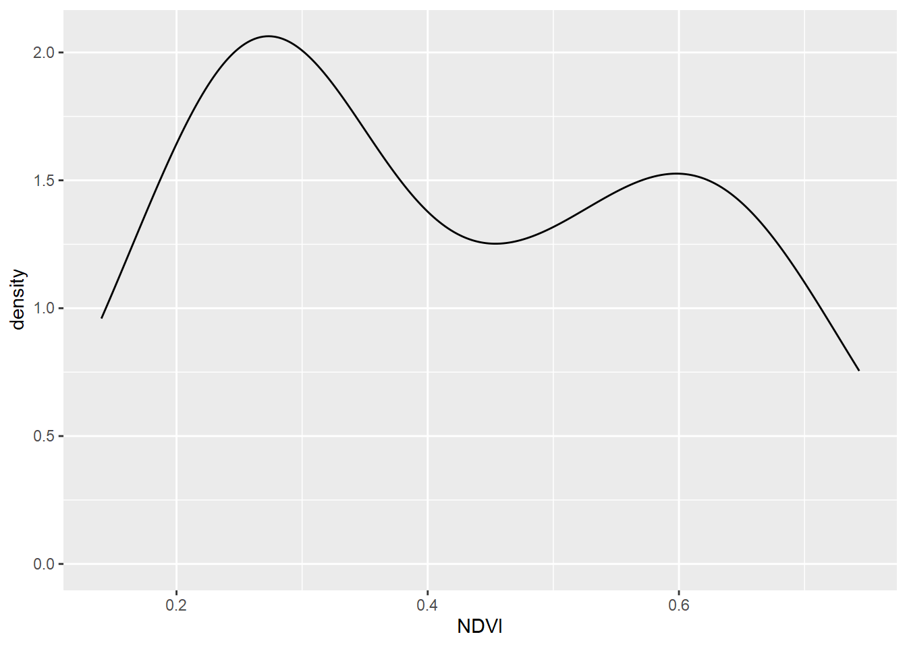
FIGURE 4.6: Density plot of NDVI, Knuthson Meadow
Note that NDVI values are <1 so bins are very small numbers, so in this case densities can be >1.
To communicate more information, we might want to use color and transparency (alpha) settings. The following graph (Figure 4.7) will separate the data by phenology (“growing” vs. “senescence” seasons) using color, and use the alpha setting to allow these overlapping distributions to both be seen. To do this, we’ll:
- “map” a variable (phenology) to an aesthetic property (fill color of the density polygon)
- set a a property (alpha = 0.2) to all polygons of the density plot. The alpha channel of colors defines its opacity, from invisible (0) to opaque (1) so is commonly used to set as its reverse, transparency.
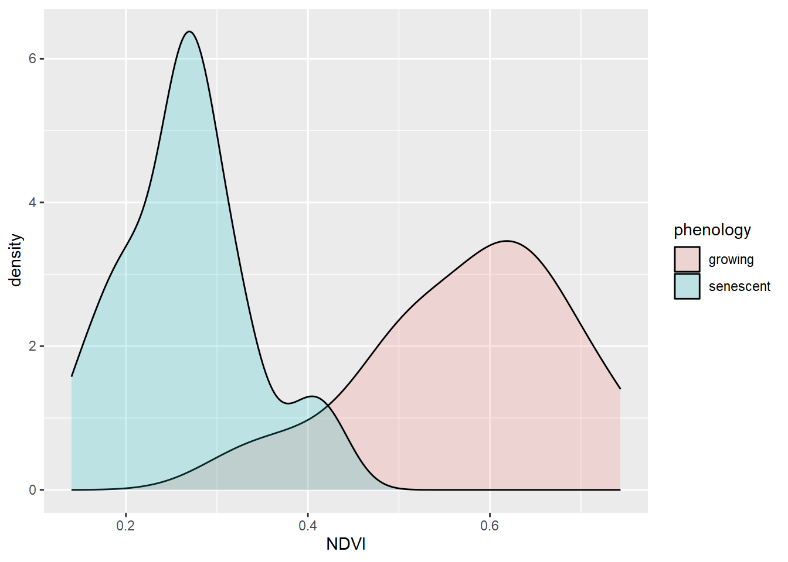
FIGURE 4.7: Comparative density plot using alpha setting
Why is the color called fill? For polygons, “color” is used for the boundary.
Similarly for the eucalyptus and oak study, we can overlay the two distributions (Figure 4.8). Since the two distributions overlap considerably, the benefit of the alpha settings is clear.

FIGURE 4.8: Runoff under eucalyptus and oak in Bay Area sites
4.3.3 Boxplot
Tukey boxplots provide another way of looking at the distributions of continuous variables. Typically these are stratified by a factor, such as site in the euc/oak study (Figure 4.9):
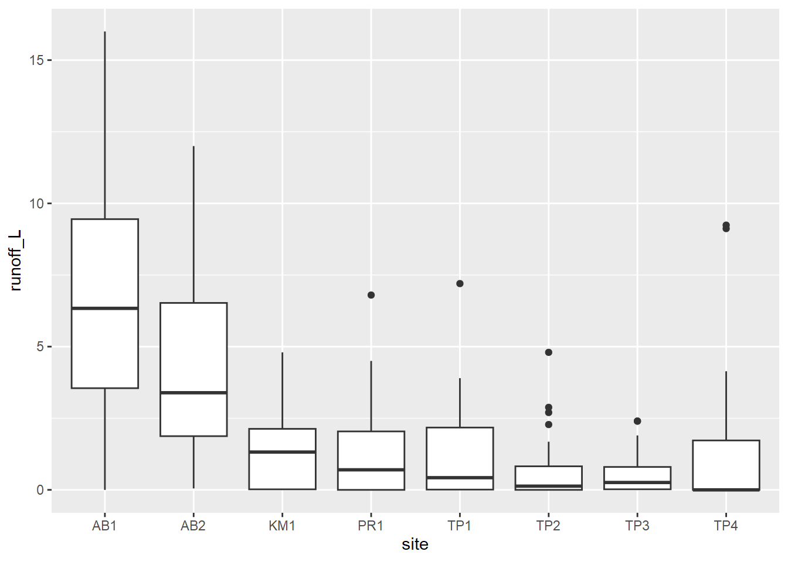
FIGURE 4.9: Boxplot of runoff by site
And then as we did above, we can communicate more by coloring by tree type. Note that this is called within the aes() function (Figure 4.10).
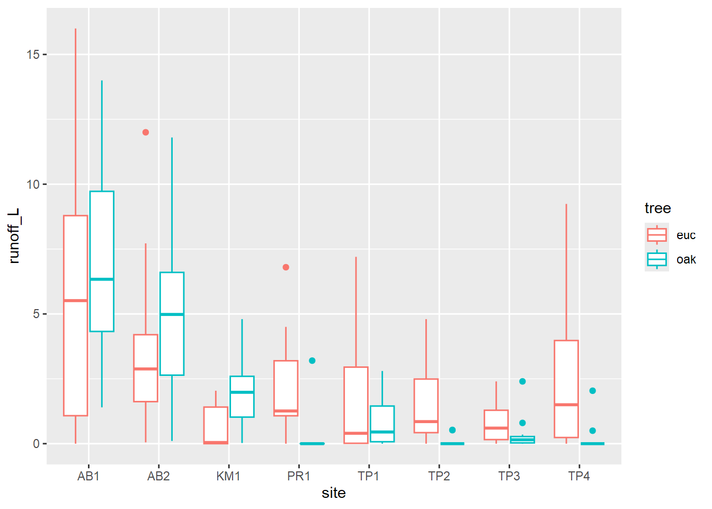
FIGURE 4.10: Runoff at Bay Area Sites, colored as eucalyptus and oak
Visualizing soil CO2 data with a box plot
In a study of soil CO2 in the Marble Mountains of California (Davis et al. 2001), we sampled extracted soil air (Figure 4.11) in a 11-point transect across Marble Valley in 1997 (Figure 4.12). Again, a Tukey boxplot is useful for visualization (Figure 4.13).
Note that in this book you’ll often see CO2 written as CO2. These are both meant to refer to carbon dioxide, but I’ve learned that subscripts in figure headings don’t always get passed through to the LaTeX compiler for the pdf/printed version, so I’m forced to write it without the subscript. Similarly CH4 might be written as CH4, etc. The same applies often to variable names and axis labels in graphs, though there are some workarounds.
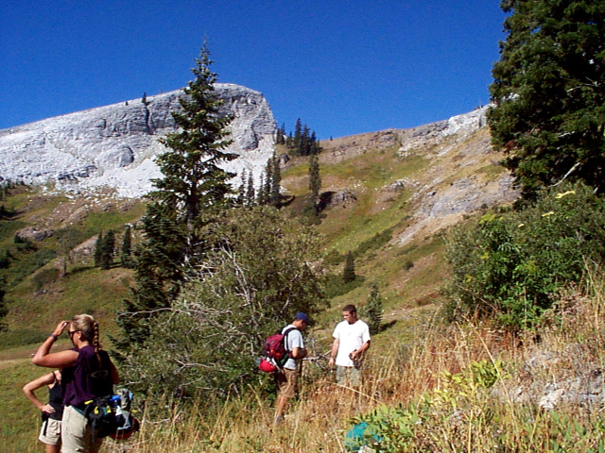
FIGURE 4.11: Marble Valley, Marble Mountains Wilderness, California
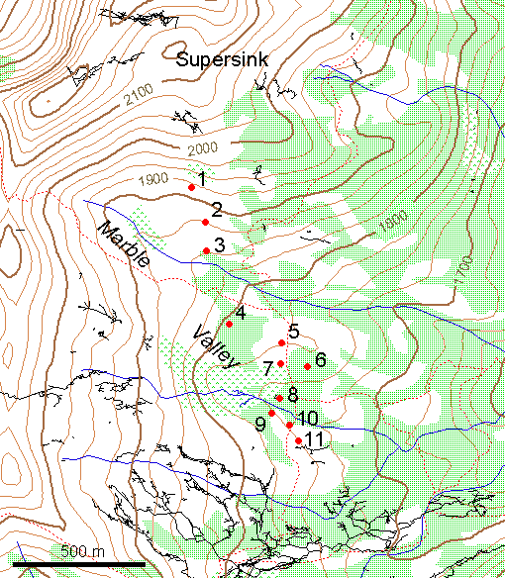
FIGURE 4.12: Marble Mountains soil gas sampling sites, with surface topographic features and cave passages
soilCO2 <- soilCO2_97
soilCO2$SITE <- factor(soilCO2$SITE) # in order to make the numeric field a factor
ggplot(data = soilCO2, mapping = aes(x = SITE, y = CO2pct)) +
geom_boxplot()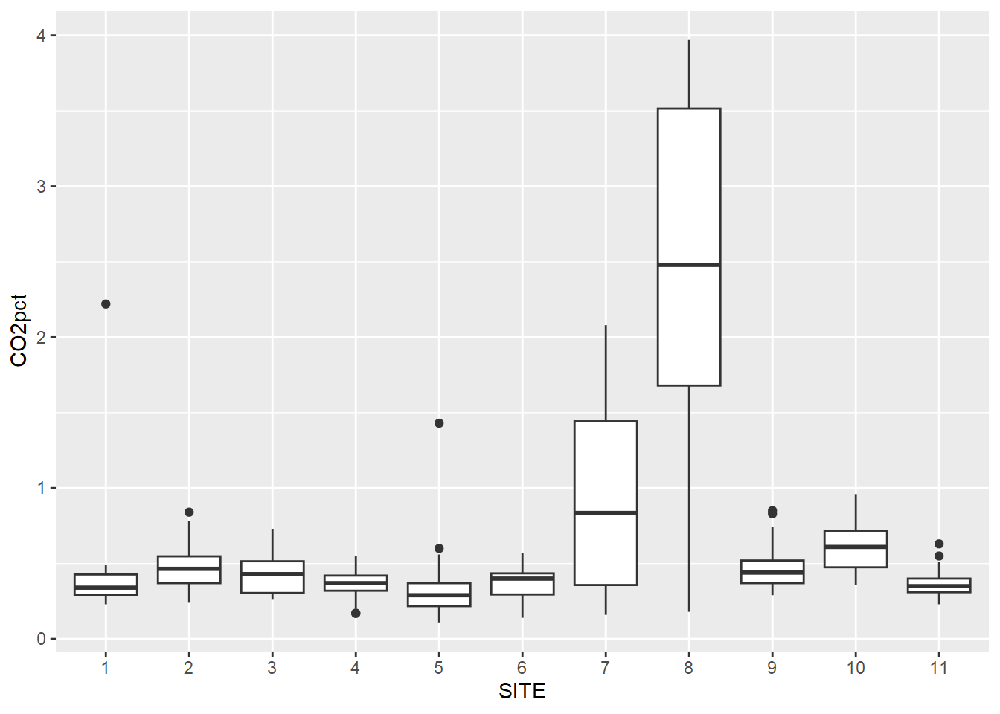
FIGURE 4.13: Visualizing soil CO2 data with a Tukey box plot
4.4 Plotting Two Variables
4.4.1 Two continuous variables
We’ve looked at this before – the scatterplot – but let’s try some new data: daily discharge (Q) and other data (like EC, electrical conductivity, a surrogate for solute concentration) from Sagehen Creek, north of Truckee, CA, 1970 to present. I downloaded the data for this location (which I’ve visited multiple times to chat with the USGS hydrologist about calibration methods with my Sierra Nevada Field Campus students) from the https://waterdata.usgs.gov/nwis/sw site (Figure 4.14). If you visit this site, you can download similar data from thousands of surface water (as well as groundwater) gauges around the country.
library(tidyverse); library(lubridate); library(igisci)
sagehen <- read_csv(ex("sierra/sagehen_dv.csv"))
plot(sagehen$Q,sagehen$EC)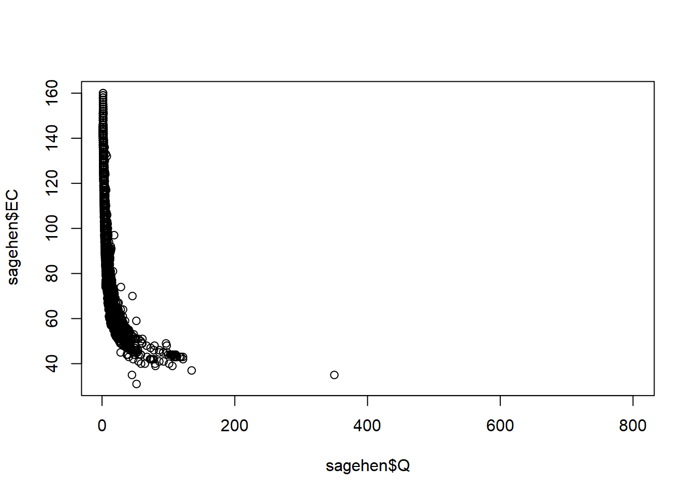
FIGURE 4.14: Scatter plot of discharge (Q) and specific electrical conductance (EC) for Sagehen Creek, California
Streamflow and water quality are commonly best represented using a log transform, or we can just use log scaling, which retains the original units (Figure 4.15).
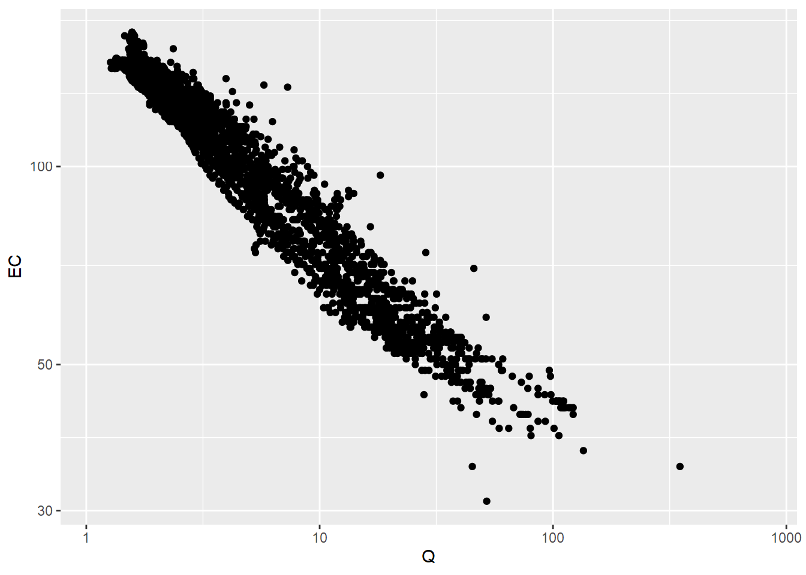
FIGURE 4.15: Q and EC for Sagehen Creek, using log10 scaling on both axes
- For both graphs, the
aes(“aesthetics”) function specifies the variables to use as x and y coordinates - geom_point creates a scatter plot of those coordinate points
Set color for all (not in aes())
Sometimes all you want is a simple graph with one color for all points (Figure 4.16). Note that:
- color is defined outside of
aes, so it applies to all points. - mapping is first argument of
geom_point, somapping =is not needed.
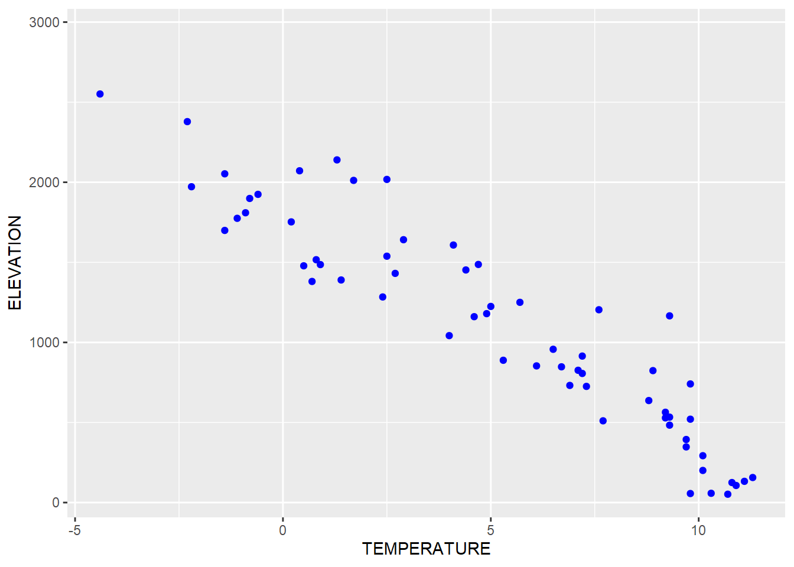
FIGURE 4.16: Setting one color for all points
4.4.2 Two variables, one discrete
We’ve already looked at bringing in a factor to a histogram and a boxplot, but there’s the even simpler bar graph that does this, if we’re just interested in comparing values. This graph compares runoff by site (Figure 4.17).
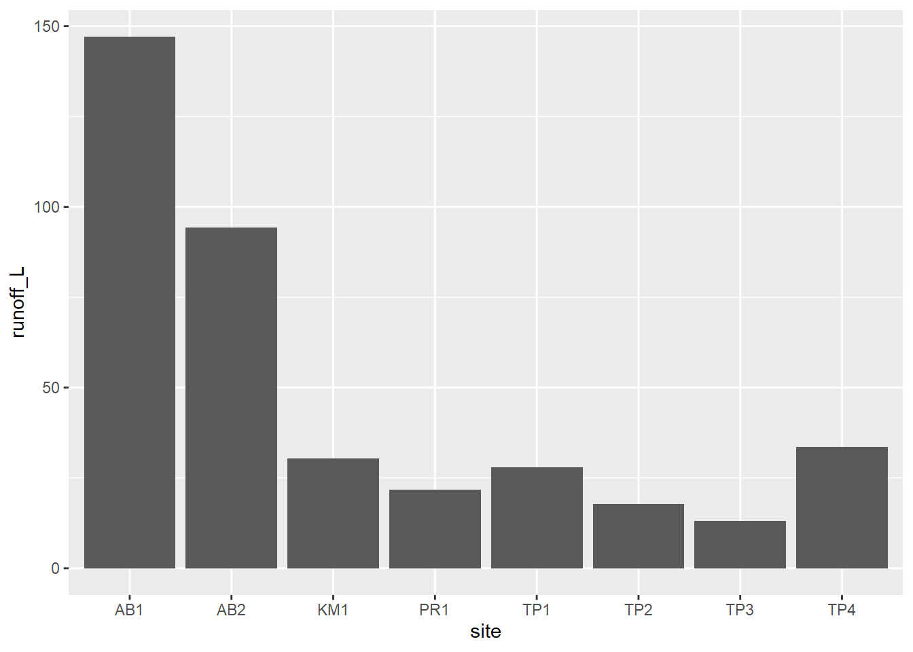
FIGURE 4.17: Two variables, one discrete
Note that we also used the
geom_bargraph earlier for a single discrete variable, but instead of displaying a continuous variable like runoff, it just displayed the count (frequency) of observations, so was a type of histogram.
4.4.3 Color systems
There’s a lot to working with color, with different color schemes needed for continuous data vs discrete values, and situations like bidirectional data. We’ll look into some basics, but the reader is recommended to learn more at sources like https://cran.r-project.org/web/packages/RColorBrewer/index.html or https://colorbrewer2.org/ or just Googling “rcolorbrewer” or “colorbrewer” or even “R colors”.
4.4.3.1 Specifying colors to use for a graphical element
When a color is requested for an entire graphical element, like geom_point or geom_line, and not in the aesthetics, all feature get that color. In the following graph the same x and y values are used to display as points in blue and as lines in red (Figure 4.18).
sierraFeb %>%
ggplot(aes(TEMPERATURE,ELEVATION)) +
geom_point(color="blue") +
geom_line(color="red")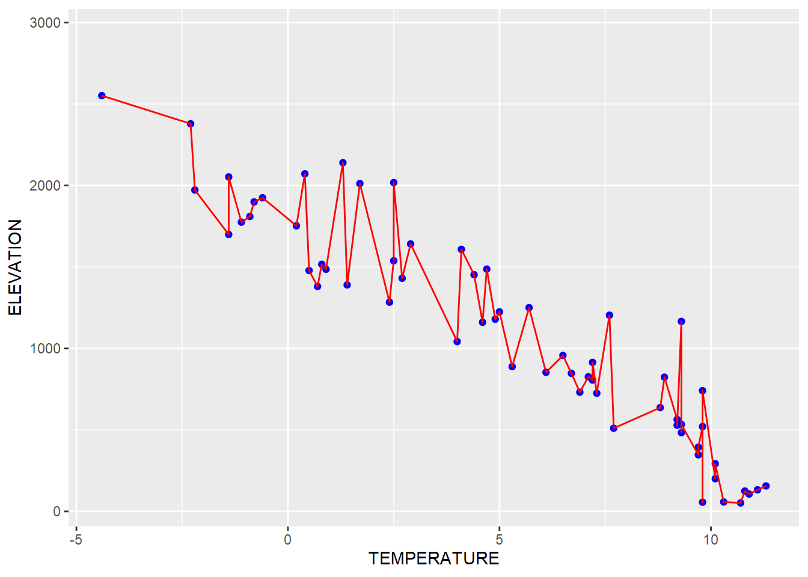
FIGURE 4.18: Using aesthetics settings for both points and lines
Note the use of pipe to start with the data then apply ggplot. This is one approach for creating graphs, and provides a fairly straightforward way to progress from data to visualization.
4.4.3.2 Color from variable, in aesthetics
If color is connected to a variable within the aes() call, a color scheme is chosen to assign either a range (for continuous) or a set of unique colors (for discrete). In this graph, color is defined inside aes, so is based on COUNTY (Figure 4.19).
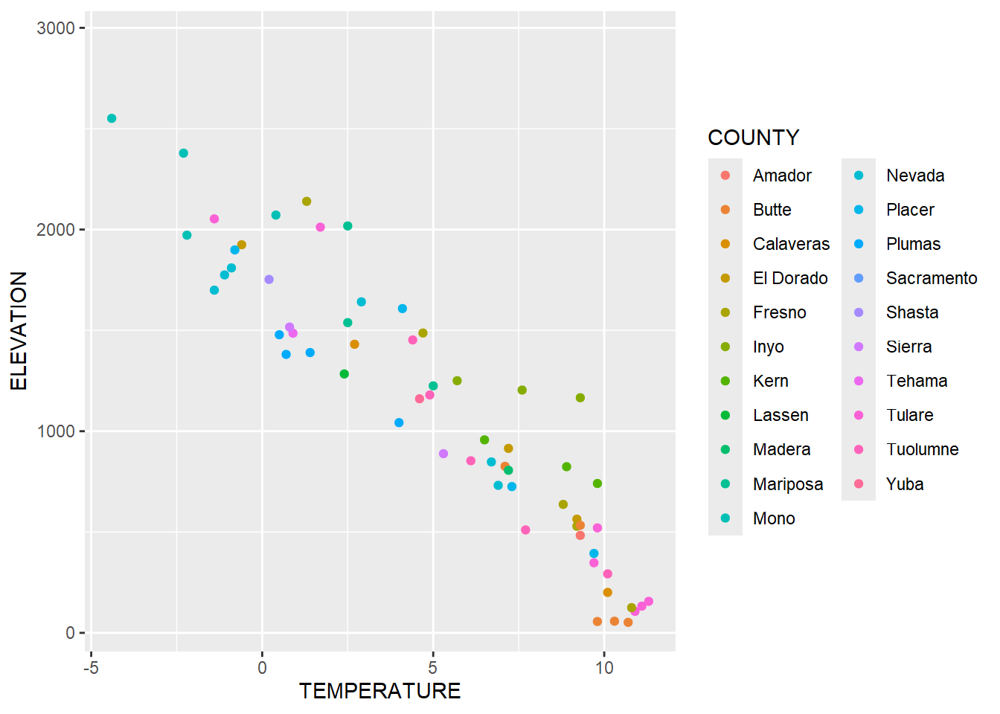
FIGURE 4.19: Color set within aes()
Note that counties represent discrete data, and this is detected by ggplot to assign an appropriate color scheme. Continuous data will require a different palette (Figure 4.20).
ggplot(data=sagehen, aes(x=Q, y=EC, col=waterTmax)) + geom_point() +
scale_x_log10() + scale_y_log10()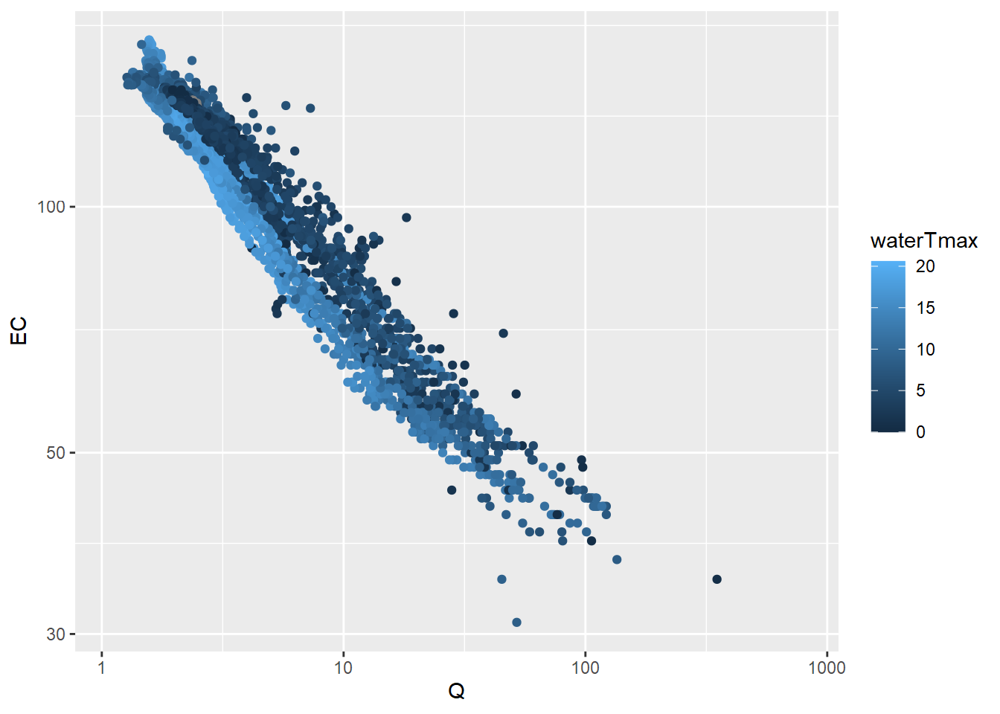
FIGURE 4.20: Streamflow (Q) and specific electrical conductance (EC) for Sagehen Creek, colored by temperature
River map and profile
We’ll build a riverData dataframe with x and y location values and elevation. We’ll need to start by creating empty vectors we’ll populate with values in a loop: d, longd, and s are assigned an empty value double(), then slope s (since it only occurs between two points) needs one NA value assigned for the last point s[length(x] to have the same length as other vectors.
library(tidyverse)
x <- c(1000, 1100, 1300, 1500, 1600, 1800, 1900)
y <- c(500, 780, 820, 950, 1250, 1320, 1500)
elev <- c(0, 1, 2, 5, 25, 75, 150)
d <- double() # creates an empty numeric vector
longd <- double() # ("double" means double-precision floating point)
s <- double()
for(i in 1:length(x)){
if(i==1){longd[i] <- 0; d[i] <-0}
else{
d[i] <- sqrt((x[i]-x[i-1])^2 + (y[i]-y[i-1])^2)
longd[i] <- longd[i-1] + d[i]
s[i-1] <- (elev[i]-elev[i-1])/d[i]}}
s[length(x)] <- NA # make the last slope value NA since we have no data past it,
# and so the vector lengths are all the same
riverData <- bind_cols(x=x,y=y,elev=elev,d=d,longd=longd,s=s)
riverData## # A tibble: 7 × 6
## x y elev d longd s
## <dbl> <dbl> <dbl> <dbl> <dbl> <dbl>
## 1 1000 500 0 0 0 0.00336
## 2 1100 780 1 297. 297. 0.00490
## 3 1300 820 2 204. 501. 0.0126
## 4 1500 950 5 239. 740. 0.0632
## 5 1600 1250 25 316. 1056. 0.236
## 6 1800 1320 75 212. 1268. 0.364
## 7 1900 1500 150 206. 1474. NAFor this continuous data, a range of values is detected and a continous color scheme is assigned (Figure 4.21). The ggplot scale_color_gradient function is used to establish end points of a color range that the data is stretched between (Figure 4.22). We can use this for many continuous variables, such as slope (Figure 4.23). The scale_color_gradient2 lets you use a mid color. Note that there’s a comparable scale_fill_gradient and scale_fill_gradient2 for use when specifying a fill (e.g. for a polygon) instead of a color (for polygons linked to the border).
ggplot(riverData, aes(x,y)) +
geom_line(mapping=aes(col=s), size=1.2) +
geom_point(mapping=aes(col=s, size=elev)) +
coord_fixed(ratio=1) + scale_color_gradient(low="green", high="red") +
ggtitle("Simulated river path, elevations, and slopes")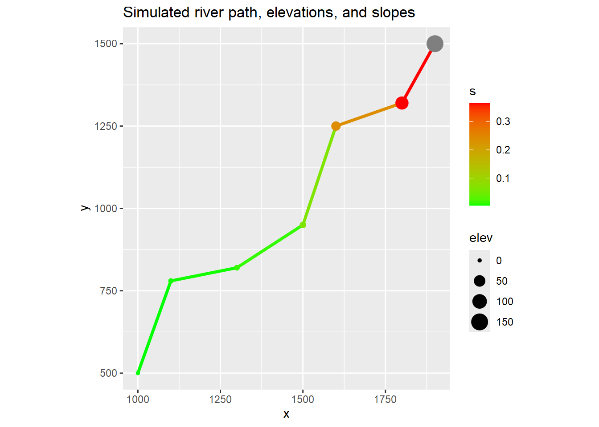
FIGURE 4.21: Channel slope as range from green to red, vertices sized by elevation
ggplot(riverData, aes(longd,elev)) + geom_line(aes(col=s), size=1.5) + geom_point() +
scale_color_gradient(low="green", high="red") +
ggtitle("Longitudinal profile")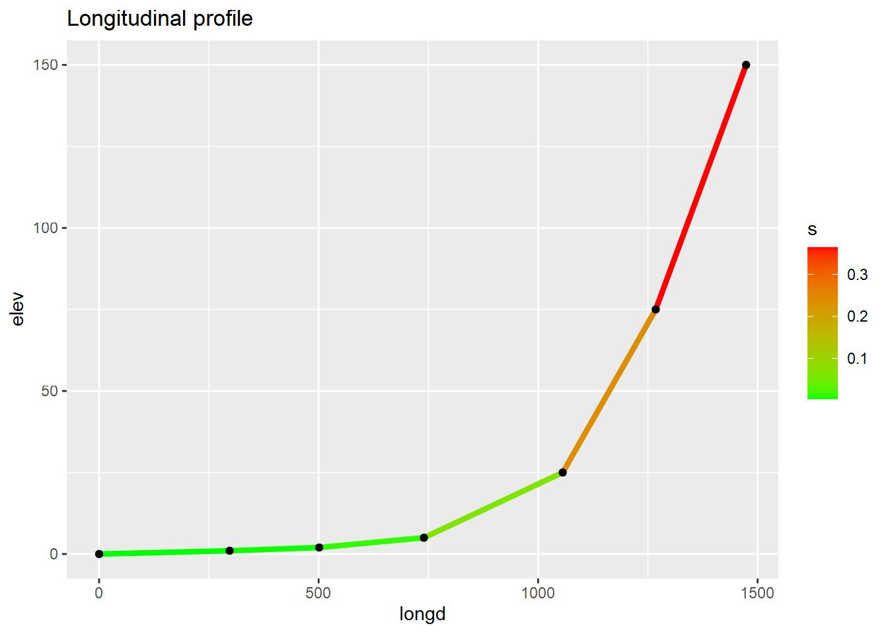
FIGURE 4.22: Channel slope as range of line colors on a longitudinal profile
ggplot(riverData, aes(longd,s)) + geom_point(aes(col=s), size=3) +
scale_color_gradient(low="green", high="red") +
ggtitle("Slope by longitudinal distance upstream")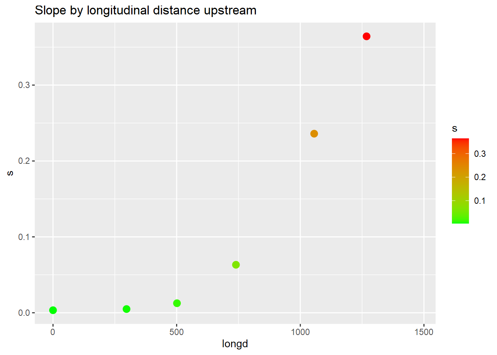
FIGURE 4.23: Channel slope by longitudinal distance as scatter points colored by slope
4.4.4 Trend line
When we get to statistical models, the first one we’ll look at is a simple linear model. It’s often useful to display this as a trend line, and this can be done with ggplot2’s geom_smooth() function, specifying the linear model “lm” method. By default, the graph displays the standard error as a gray pattern (Figure 4.24).
sierraFeb %>%
ggplot(aes(TEMPERATURE,ELEVATION)) +
geom_point(color="blue") +
geom_smooth(color="red", method="lm")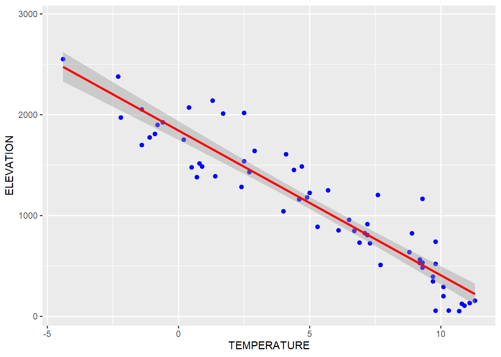
FIGURE 4.24: Trend line with a linear model
4.5 General Symbology
There’s a lot to learn about symbology in graphs. We’ve included the basics, but readers are encouraged to also explore further. A useful vignette accessed by vignette("ggplot2-specs") lets you see aesthetic specifications for symbols, including:
Color and fill
Lines
- line type, size, ends
Polygon
- border color, linetype, size
- fill
Points
- shape
- size
- color and fill
- stroke
Text
- font face and size
- justification
4.5.1 Categorical symbology
One example of a “big data” resource is EPA’s Toxic Release Inventory that tracks releases from a wide array of sources, from oil refineries on down. One way of dealing with big data in terms of exploring meaning is to use symbology to try to make sense of it (Figure 4.25).
library(igisci)
TRI <- read_csv(ex("TRI/TRI_2017_CA.csv")) %>%
filter(`5.1_FUGITIVE_AIR` > 100 &
`5.2_STACK_AIR` > 100 &
`INDUSTRY_SECTOR` != "Other")
ggplot(data = TRI, aes(log(`5.2_STACK_AIR`), log(`5.1_FUGITIVE_AIR`),
color = INDUSTRY_SECTOR)) +
geom_point()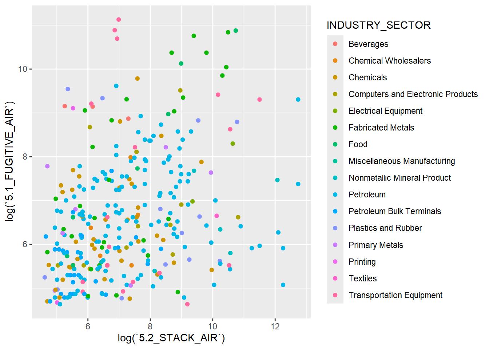
FIGURE 4.25: EPA TRI, categorical symbology for industry sector
4.5.2 Log scales instead of transform
In the above graph, we used the log() function in aes to use natural logarithms instead of the actual value. That’s a simple way to do this. But what if we want to display the original data, just using a logarithmic grid? This might communicate better since readers would see the actual values (Figure 4.26).
ggplot(data=TRI, aes(`5.2_STACK_AIR`,`5.1_FUGITIVE_AIR`,color=INDUSTRY_SECTOR)) +
geom_point() + scale_x_log10() + scale_y_log10()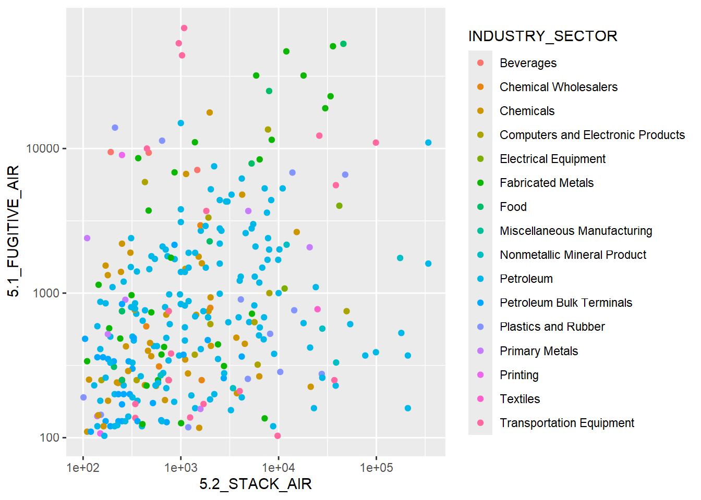
FIGURE 4.26: Using log scales instead of transforming
4.6 Graphs from Grouped Data
Earlier in this chapter, we used a pivot table to create a data frame XSptsPheno, which has NDVI values for phenology factors. [You may need to run that again if you haven’t run it yet this session.] We can create graphs showing the relationship of NDVI and elevation grouped by phenology (Figure 4.27).
XSptsPheno %>%
ggplot() +
geom_point(aes(elevation, NDVI, shape=vegetation,
color = phenology), size = 3) +
geom_smooth(aes(elevation, NDVI,
color = phenology), method="lm") 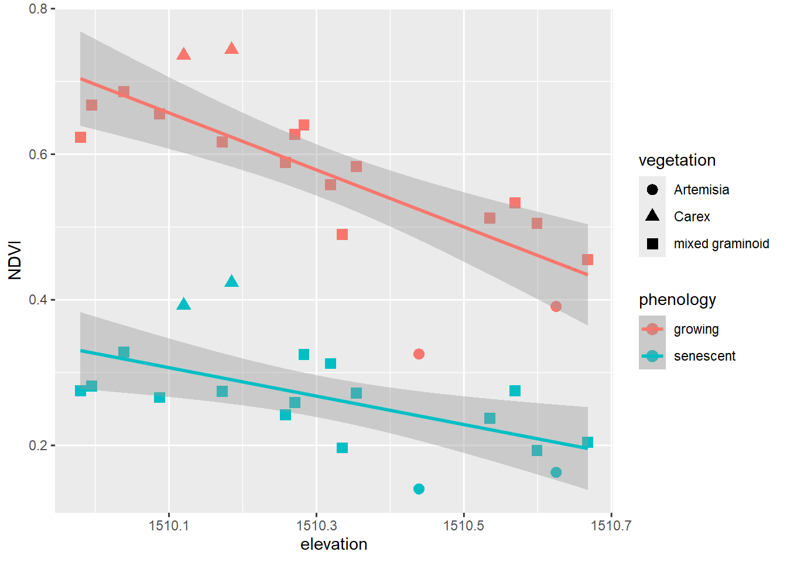
FIGURE 4.27: NDVI symbolized by vegetation in two seasons
And similarly, we can create graphs of rainfall vs. runoff for eucs and oaks from the tidy_eucoak dataframe from the Thompson et al. (2016) study [and you may need to run that again to prep the data] (Figure 4.28).
ggplot(data = tidy_eucoak) +
geom_point(mapping = aes(x = rain_mm, y = runoff_L, color = tree)) +
geom_smooth(mapping = aes(x = rain_mm, y= runoff_L, color = tree),
method = "lm") +
scale_color_manual(values = c("seagreen4", "orange3"))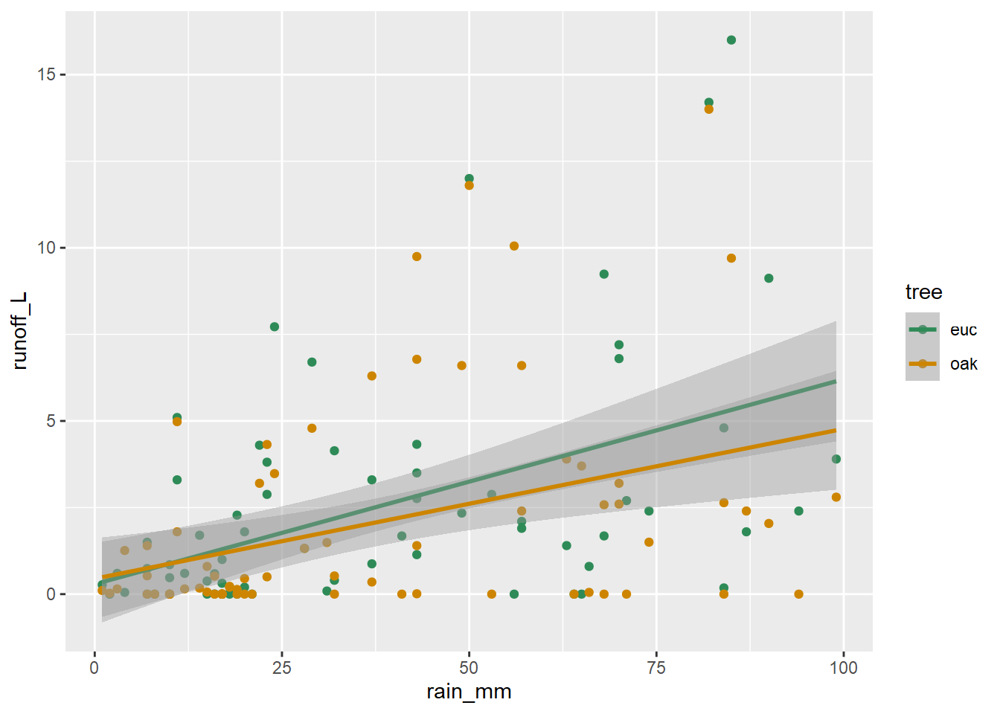
FIGURE 4.28: Eucalyptus and oak: rainfall and runoff
4.6.1 Faceted graphs
A theme we’ve already seen in this chapter is communicating more by comparing data on the same graph. We’ve been using symbology for that, but another approach is to create parallel groups of graphs called “faceted graphs” (Figure 4.29).
ggplot(data = tidy_eucoak) +
geom_point(aes(x=rain_mm,y=runoff_L)) +
geom_smooth(aes(x=rain_mm,y=runoff_L), method="lm") +
facet_grid(tree ~ .)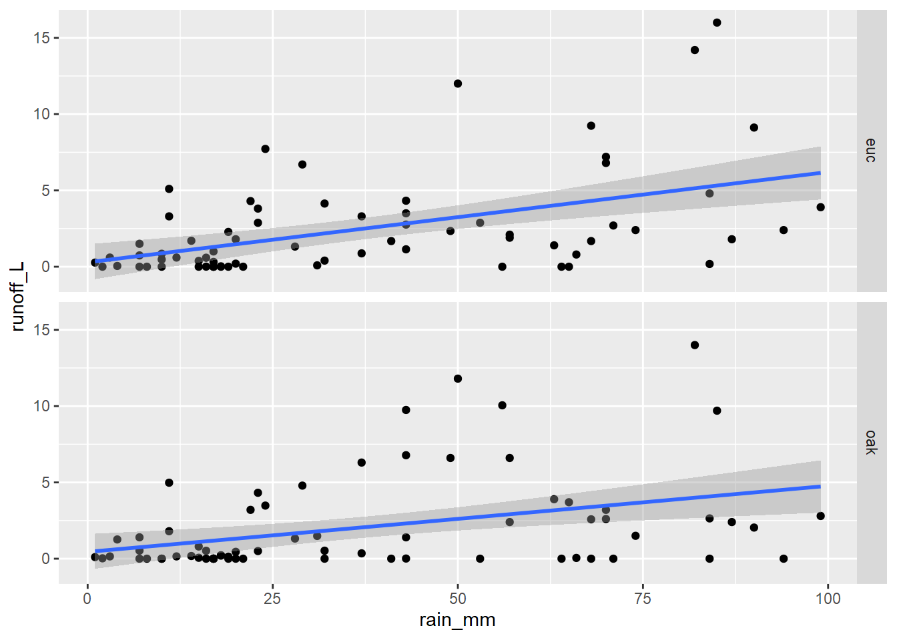
FIGURE 4.29: Faceted graph alternative to color grouping (note that the y scale is the same for each)
Note that the y scale is the same for each, which is normally what you want since each graph is representing the same variable. If you were displaying different variables, however, you’d want to use the scales = "free_y" setting.
Again, we’ll learn about pivot tables in the next chapter to set up our data.
4.7 Titles, Subtitles, Axis Labels, and Legend Position
All graphs need titles, and ggplot2 uses its labs() function for this (Figure 4.30) as well as for subtitles and axis label improvements.
ggplot(data = tidy_eucoak) +
geom_point(aes(x=rain_mm,y=runoff_L, color=tree)) +
geom_smooth(aes(x=rain_mm,y=runoff_L, color=tree), method="lm") +
scale_color_manual(values=c("seagreen4","orange3")) +
labs(title="rainfall ~ runoff",
subtitle="eucalyptus & oak sites, 2016",
x="Rain (mm)",
y="runoff (L)") +
theme(legend.position = c(0.1,0.8))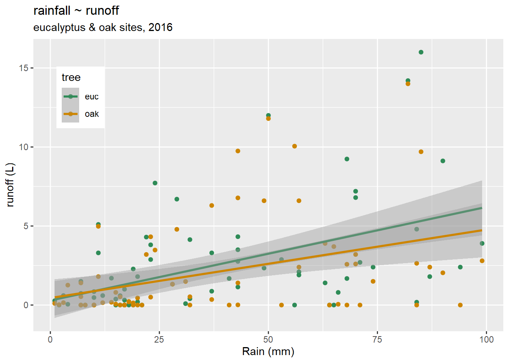
FIGURE 4.30: Titles added
Note that we also used the
theme(legend.position)setting to set the position of the legend as x and y values as a proportion of the graph dimensions. See?themeto see the wide variety of changes that can be made to modify your plot from the default settings.
4.8 Pairs Plot
Pairs plots are an excellent exploratory tool to see which variables are correlated. Since only continuous data is useful for this, and since pairs plots can quickly get overly complex, it’s good to use dplyr::select to select the continuous variables, or maybe use a helper function like is.numeric with dplyr::select_if (Figure 4.31).
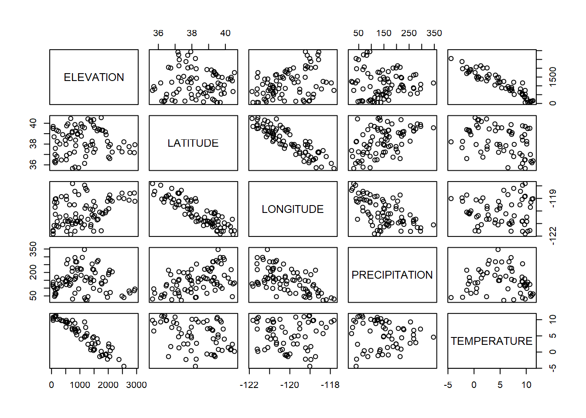
FIGURE 4.31: Pairs plot for Sierra Nevada stations variables
The GGally package has a very nice-looking pairs plot that takes it even further. In addition to scatterplots, it has boxplots, histograms, density plots, and correlations, all stratified and colored by species. The code for this figure is mostly borrowed from Horst et al. (2020) (Figure 4.32).
library(palmerpenguins)
penguins %>%
dplyr::select(species, body_mass_g, ends_with("_mm")) %>%
GGally::ggpairs(aes(color = species, alpha = 0.8)) +
scale_colour_manual(values = c("darkorange","purple","cyan4")) +
scale_fill_manual(values = c("darkorange","purple","cyan4"))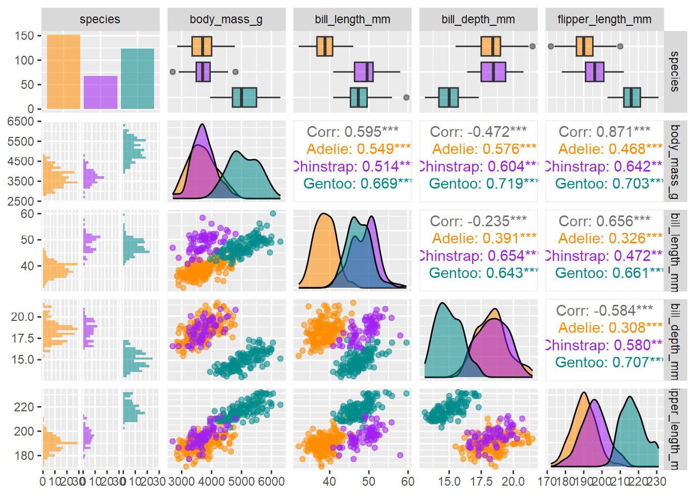
FIGURE 4.32: Enhanced GGally pairs plot for palmerpenguin data
4.9 Exercises: Visualization
Exercise 4.1 Using the methods in section 4.3, create a similar graph of the species data set we looked at in section
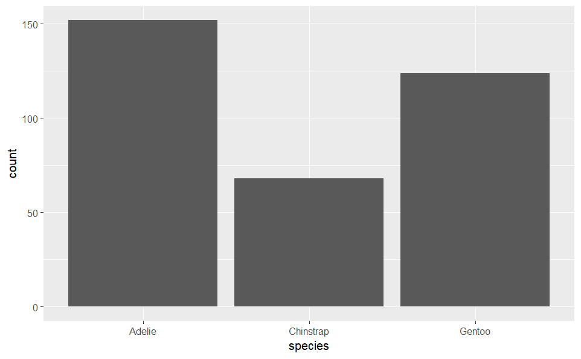
Exercise 4.2 Using similar methods as we just used, create the graph shown below. First, explore the built-in vectors state.abb and state.region to learn about how they are structured. Then, using methods described in 2.6.4.2, create a single data frame from those inputs. Once you’ve explored that result, create the graph.
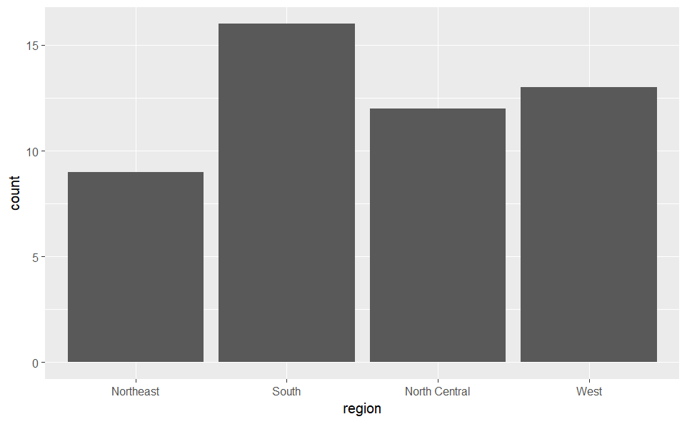
Exercise 4.3 Create the graph below using methods described in 4.3.3.1, using the built-in data set you can see labeled on the x axis. You’ll want to start by exploring the data set and learning about it by accessing the simple “?___” help system; then convert it into a suitable data structure.
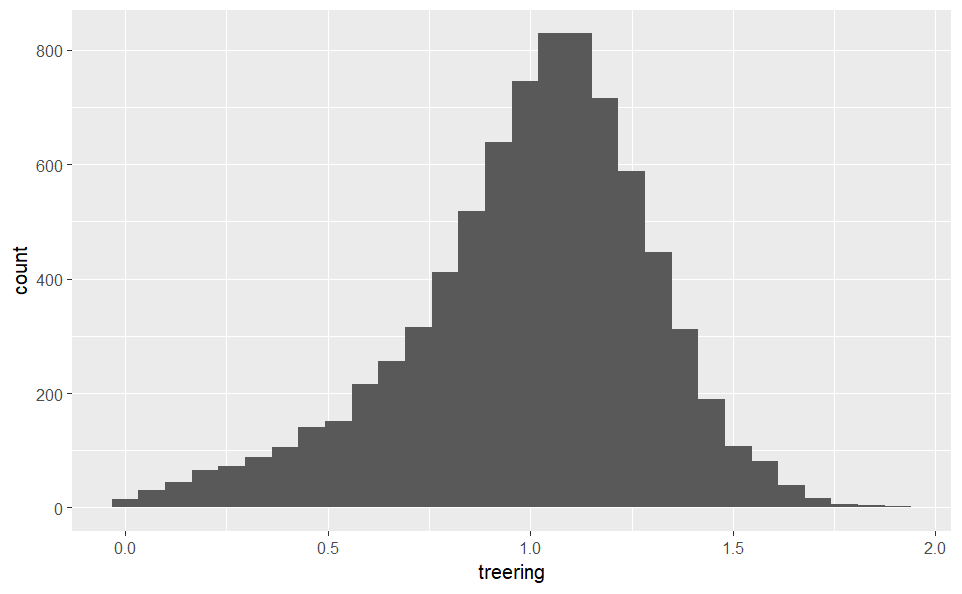
Exercise 4.4 Have a look at the st tibble created in 3.2.1.1, and then use it to create the graph shown here, using methods similar to 4.3.2. What is the approximate modal value?
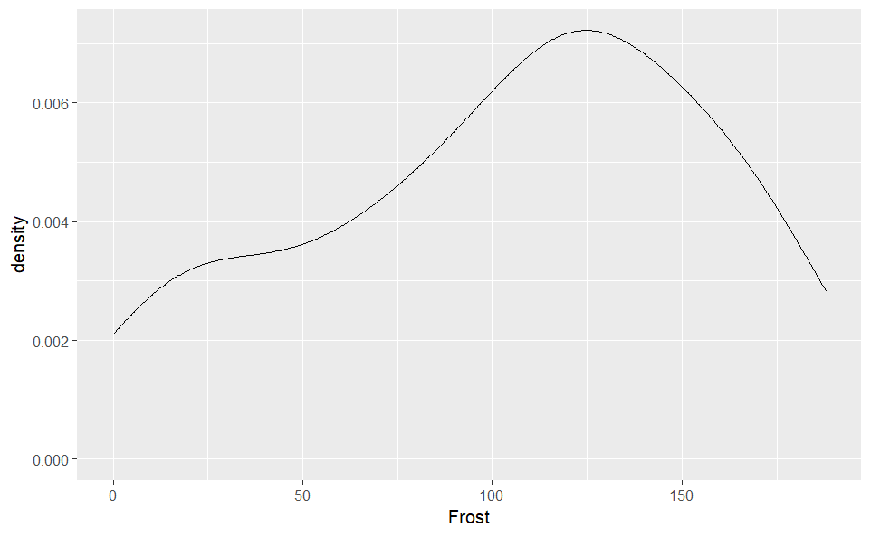
Exercise 4.5 From the same data, create the following graphs using methods learned in this chapter. What can you learn about the regions from the median values shown?
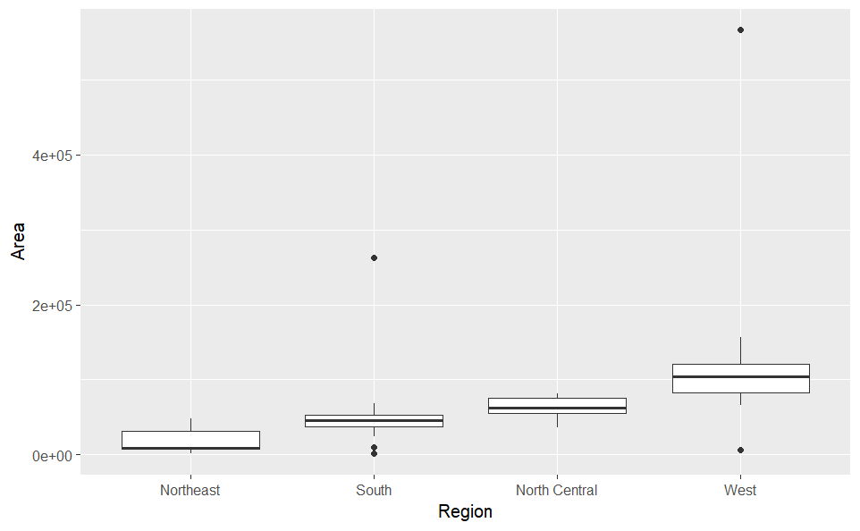
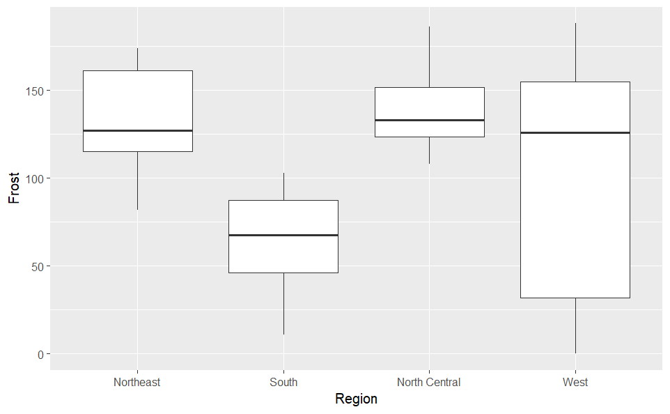
Exercise 4.6 From the same data, create the scatter plot shown below.
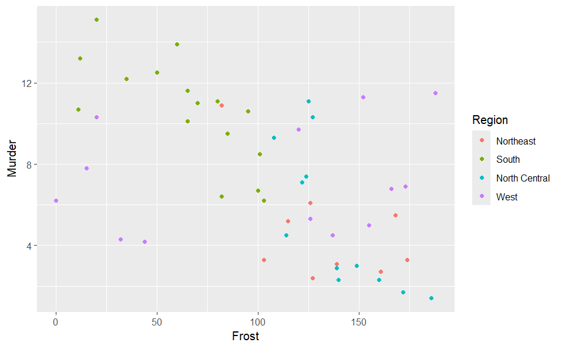
Exercise 4.7 Copying the above code to a new code chunk, add a trend line using methods in 3.4.4 to produce the graph shown here. What can you say about what this graph is showing you?
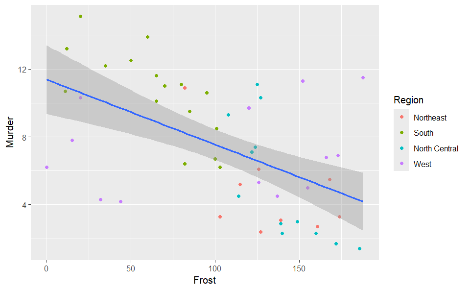
Exercise 4.8 Again, copying the code to a new code chunk, add an appropriate title, as shown here.
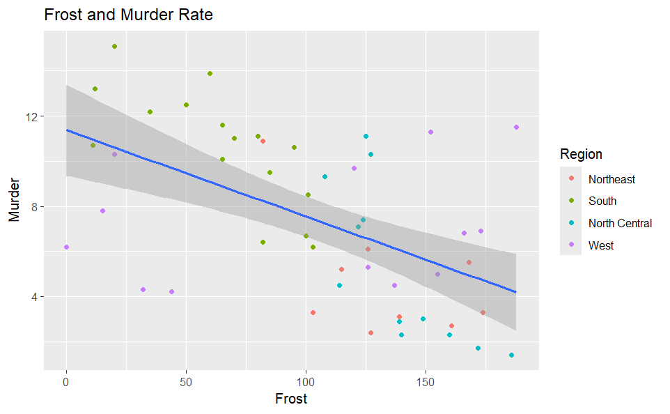
Exercise 4.9 Again copying to a new code chunk, change your plot to place labels with symbology shown here. Any observations about outliers?
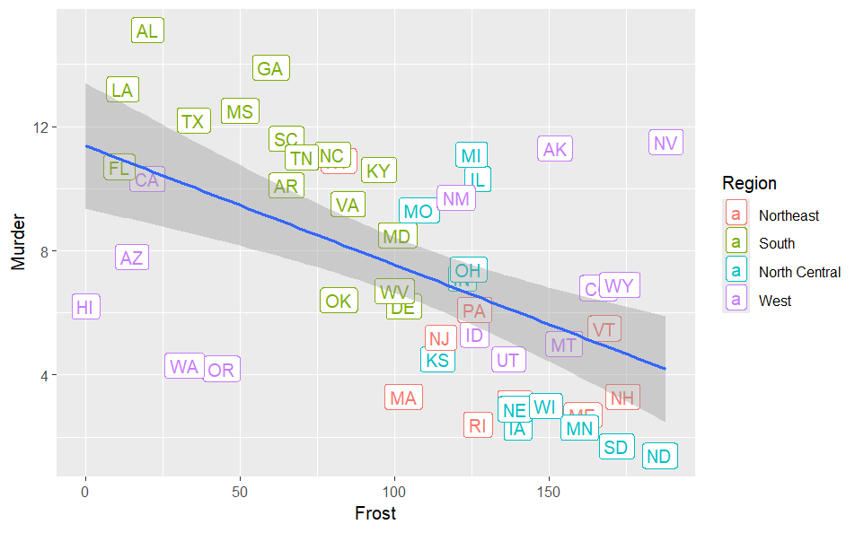
Exercise 4.10 Using the soilCO2 data from igisci, create a boxplot arranged by the SITE factor and using a log10 scaling on the y axis displaying soil CO2 values.
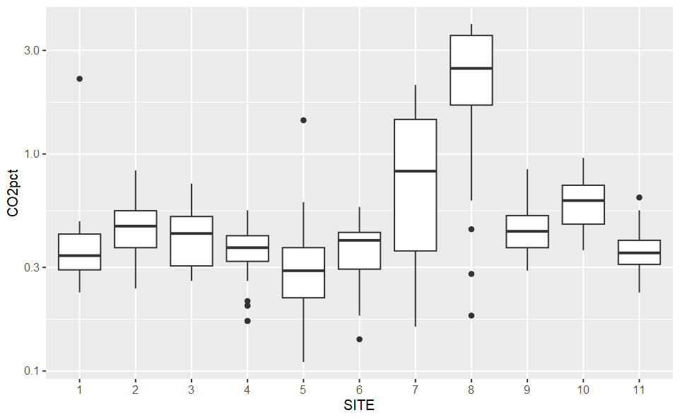